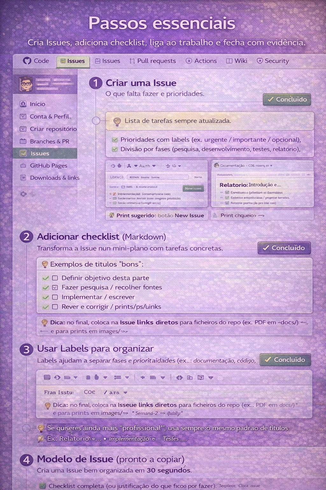
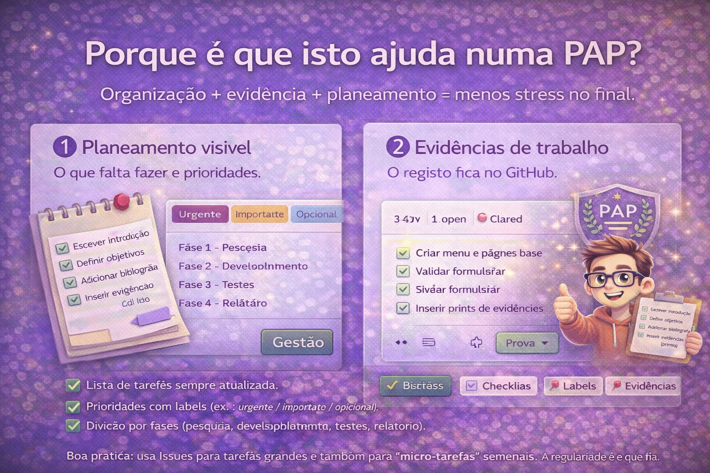

As Issues são uma das melhores formas de manter uma PAP organizada.
Funcionam como lista de tarefas, registo de decisões e
prova de progresso ao longo do tempo.
A ideia é simples: tudo o que “falta fazer” vira uma Issue.
Quando resolves, atualizas a Issue (checklist, comentários, anexos/links) e no fim fechas.
Resultado: tens um histórico claro do que foi feito, quando e porquê.
✅ Tarefas🧾 Checklists🏷️ Labels📌 Evidências
Imagem de capa da secção Issues

Porque é que isto ajuda numa PAP?
Organização + evidência + planeamento = menos stress no final.
Infográfico: porque é que as Issues ajudam numa PAP

Boa prática: usa Issues para tarefas grandes e também para “micro-tarefas” semanais.
A regularidade é o que cria a melhor evidência.
Passos essenciais
Cria Issues, adiciona checklist, liga ao trabalho e fecha com evidência.